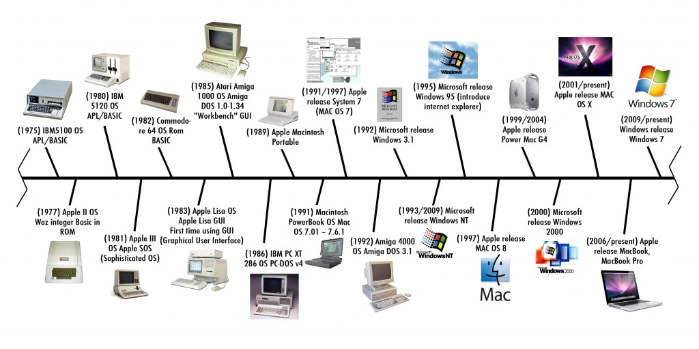
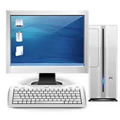

History of personal computers
A personal computer (PC) is a multi-purpose computer whose size, capabilities, and price make it feasible for individual use. PCs are intended to be operated directly by an end user, rather than by a computer expert or technician. Computer time-sharing models that were typically used with larger, more expensive minicomputer and mainframe systems, to enable them be used by many people at the same time, are not used with PCs.
Early computer owners in the 1960s, invariably institutional or corporate, had to write their own programs to do any useful work with the machines. In the 2010s, personal computer users have access to a wide range of commercial software, free software ("freeware") and free and open-source software, which are provided in ready-to-run form. Software for personal computers is typically developed and distributed independently from the hardware or OS manufacturers. Many personal computer users no longer need to write their own programs to make any use of a personal computer, although end-user programming is still feasible. This contrasts with systems such as smartphones or tablet computers, where software is often only available through a manufacturer-supported channel, and end-user program development may be discouraged by lack of support by the manufacturer.
Since the early 1990s, Microsoft operating systems and Intel hardware have dominated much of the personal computer market, first with MS-DOS and then with Windows. Alternatives to Microsoft's Windows operating systems occupy a minority share of the industry. These include Apple's macOS and free open-source Unix-like operating systems such as Linux. Advanced Micro Devices (AMD) provides the main alternative to Intel's processors.
Page Two:
Page Three:
|  |
|---|
| History of pc's |
|  |
|---|
| A desktop computer |